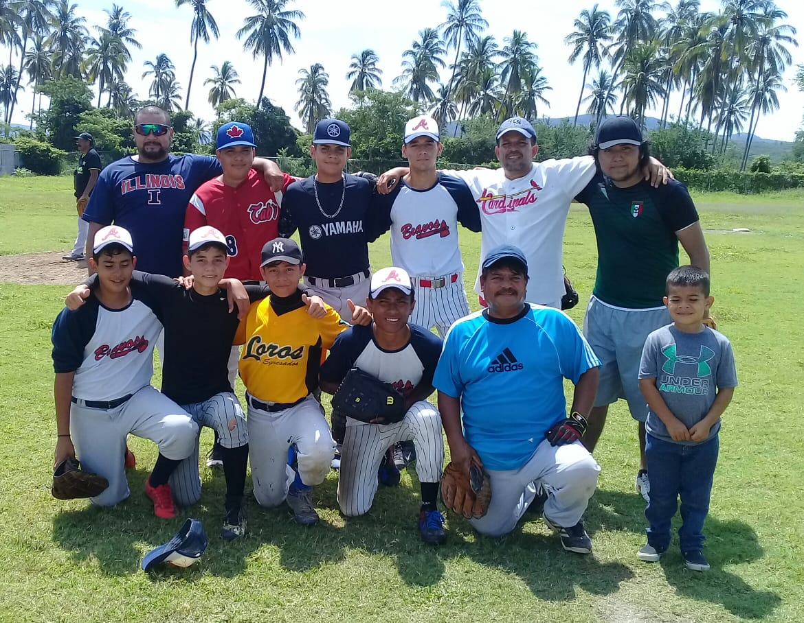
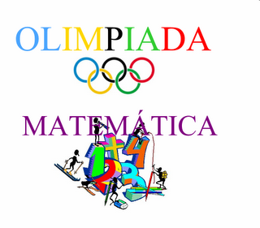

José Ricardo Mendoza Martínez
Estudiante de la Universidad de Colima en la Facultad de telemática cursando la carrera de Ingeniería de Software.
Formación Académica
Primaria
De 2003 al 2009 estudié en la primaria José S. Benítez ubicada en la capital del estado de Colima.
Secundaria
Empece mi educación secundaria en la secundaria federal Enrique Corona Morfín sin embargo despues de haber estudiado ahí por 1 bimestre recibi una invitación para participar en el proyecto estatal de escuela de talentos, aceptando la invitación y siendo parte de la primer generación que curso en esa secundaria.
Bachillerato
Concluida mi educación básica ingresé al bachillerato #1 de la UdC.
Licenciatura
Una vez terminada mi etapa en la educación media superior entre a la facultad de telemática para estudiar la carrera de ingeniería de software el cual es el nivel educativo en que me encuentro cursando actualmente.
Datos
Intercambio en Canadá
El semestre pasado estuve de intercambio estudiantil en Canadá, se me da el inglés, tengo planeado hacer mis prácticas allá de igual forma tengo planeado aplicar para una beca y poder realizar una maestría en Japón.
Hobbies
Tengo varios hobbies, me gusta practicar béisbol, tenis, frontenis, fútbol y ajedrez.
Así como me gusta jugar Videojuegos, ver peliculas, leer comics y libros.
Logros
- Olimpiada del Conocimiento Infantil
- Olimpiada Nacional Infantil
- Universiada Nacional
- Olimpiada Matemática
En sexto de primaria quede en primer lugar de mi zona escolar y dentro de los primeros 50 a nivel estatal en la primera etapa de la Olimpiada del Conocimiento Infantil, con esto ganando el pase al la segunda etapa, en la cual quede dentro de los primeros 20 lugares a nivel estatal, sin embargo no fue suficiente ya que solo los primeros 14 viajarian al Distrito Federal, donde recibirian un reconocimiento del presidente de la república en turno y una beca.

Desde quinto de primaria hasta el termino de la secundaria participé en la Olimpiada Nacional Infantil en la disciplina, en 2 ocasiones pasando a la etapa regional terminando en segundo y primer lugar a nivel estatal respectivamente, siendo la segunda ocasion en la que estuve más cerca de llegar a la etapa nacional quedando en cuarto lugar (pasando solamente los 3 primeros a la etapa nacional).
En tercer semestre de la carrera participé en la etapa regional de la Universiada Nacional en la disciplina de Ajedrez.
En secundaria participé en la etapa estatal de la olimpiada matemática despues de haber pasado la etapa de clubes.
